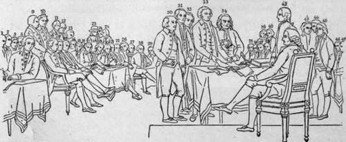
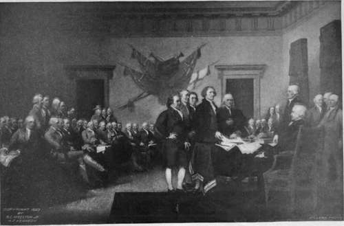
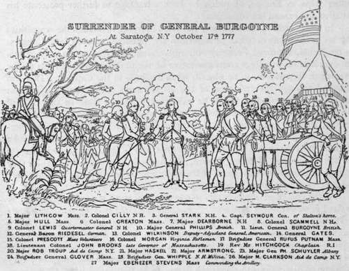

Tin Trumbull Paintings
Description
This section is from the book "The National Capitol. Its Architecture Art And History", by George C. Hazelton, Jr. Also available from Amazon: The National Capitol Its Architecture Art and History.
Tin Trumbull Paintings
The four historical paintings which adom tne larger panels on the western walls of the rotunda are the work of John Trumbull, a son of Jonathan Trumbull, Revolutionary Governor of Connecticut. They represent vital scenes connected with the War for Independence, in which the artist himself participated. Trumbull rose to the position of aide-de-camp to General Washington by reason of his skilful execution of drawings showing the enemy's works, and, later, was assigned to the command of Gates as acting Adjutant-General, with the rank of colonel. In the peaceful arts, he was the pupil of Benjamin West, whose influence in style is here seen.
In Congress, aL.the Independence Hall, Fhilaxielphia, July 177a.
1. GEO. WHYTE Va.
2. WM. WHIPPLE n.k.
3. JQSIAH BARTLETT N.H
4. 8ENJ. HARRISON Va. 5 THOMAS LYNCH S.C.
6. richard henry lee Va.
7. SAM. ADAMS Mass. A. GEO CLINTON N.Y. 9. WILLIAM PACA Md.
10. Samuel chase Md.
11. lewis morris NY.
12. WILLIAM fLOYD ny.
13. ARTHUR MIDDLETON S.C.
14. thomas haywaro s.c.
15. CHAS. CARROLL Md*
16. GEO. WALTON Ca.
17. ROB. MORRIS Pa.
18. THOM. WILLING Tid.
19. BENJAMIN RUSH Pa.
20. ELBRlOCE CERRY Mass. 21. ROB. TREAT PAfNE Mass.
22. ABRAM CLARK KJ.
23. STEPH HOPKINS RI.
24. WILLIAM ELLERY RI.
25. GEO. CLYMER Pa. 26.WILLIAM HOOPER N.CV 27. JOSEPH HEWES N.C.
28 JAMES WILSON Pa. 27. FRANCIS HOPKINSON n.j. 30. JOHN. ADAMS Mass. 31. ROGER SHERMAN Coo. 32. ROB. L-LIVINGSTON nx 33 THOMAS JEFFERSON Va. 34.BENJ. FRANKLIN Pa, 35.RICHARD STOCKTON-NT 36 FRANCIS LEWIS n.y.
37. 0HN WITHERSPOON N.
38. SAM. HUNTINGTON Cox.
39. WILLIAM WILLIAMS fimC
40. OLIVER WOLCOTT Con. 41 JOHN HANCOCK Ma«. 42.CHAS THOMPSON Pa, 43.CEORCE READ DcL 44.JOHN DICKINSON Pa. 45.tDW. RUTLEOGE S.C.
46. THOMAS MCKEAN Pa.
47. philip livincston n.y.
Taking offense at the action of Congress regarding the date of his commission, the young soldier resigned from the army in 1777 and sailed for Europe to prosecute his more congenial studies. While in London, at the time of the Major Andr6 affair, he was unfortunately arrested as an American spy, and imprisoned for seven months; but, principally through the interposition of West, who was the painter in ordinary, the King, George III., promised that, in any event, the artist's head should be spared, and, finally, through the efforts of Fox, Burke and others, ordered his release upon condition that he leave England in thirty days. The terms were gladly acceded to; West and Copley became his sureties; and Trumbull shortly again took up his residence in his native land, where he devoted himself assiduously to the painting of life portraits—among which were several of Washington—for proposed historical pictures. Upon the restoration of peace, Trumbull made other trips to Europe, of which he took advantage to further prosecute his studies and extend his collection.
In 1817, after spending nearly two years in trying to awaken the sympathies of his government in behalf of American art, Trumbull secured from Congress a resolution, approved February 6th, authorizing the President to employ him to execute four paintings commemorative of the most important events of the American Revolution, to be placed, when finished, in the Capitol. This was effected through the influence of the artist's many friends and the interest awakened by the studies which he exhibited for some time in the Hall of Representatives. A spirited debate, which is reported as having been " interesting, amusing and instructive," occurred at the third reading upon the question of the passage of the resolution. It was advocated by Calhoun, John Randolph of Roanoke, Grosvenor, Harrison and others, and passed in spite of the opposition of Ross, Forsyth, Hardin and Robertson, who, while they generally recognized the talents of the artist, urged economy, and were narrowly adverse to the government becoming a patron of the fine arts.
As the choice of subjects was left to the Executive, the artist immediately waited upon President Madison. Trumbull proposed making the pictures six feet high by nine feet long, but the President objected. " Consider, sir," said he, " the vast size of the apartment in which these works are to be placed—the rotunda, one hundred feet in diameter, and the same in height —paintings of the size which you propose, will be lost in such a space; they must be of dimensions to admit the figures to be the size of life." The contract for the paintings was formally executed on March 15th by Richard Rush, acting Secretary of State; and Trumbull immediately set to work upon the canvases. The artist received $8,000 in advance, which was evidently very welcome; for, with the usual fatality of a man of genius, he admits that he had been " constantly drifting upon the fatal lee-shore of debt, and of necessity was driven to continue the wretched resource of borrowing the means of subsistence".
Trumbull was unusually well fitted for his task by reason of his actual knowledge of the war and his personal acquaintance with the builders of the nation. The $32,000 which he received from Congress in payment for the four pictures was only a reasonable compensation for the time occupied and the cleverness displayed in the studies and finished works. For their historical value, if for naught else, the paintings are worthy of the place they occupy. The individual portraits are valuable as replicas of life portraits contained in the small original pictures now in the Trumbull collection at Yale University. Washington, writing to Lafayette in 1791, says of Trumbull's work : " He has spared no pains in obtaining from the life, the likenesses of those characters, French as well as American, who bore a conspicuous part in our Revolution; and the success with which his efforts have been crowned, will form no small part of the value of his pieces." The sameness of expression in the various faces, so often noted, is due as much to the fact that the style of the period was to appear with the face smoothly shaven as to a want of individuality expressed by the painter. The Duke de Lauzun is noticeable as the only one in the four pictures wearing even a moustache. Many of the figures are stiff and unnatural, and the perspective is not always of the best. The grouping, however, is good, and while the pictures do not in color, drawing, imagination or vitality approach the excellence reached by Meissonier, Detaille, Sargent, Dagnan-Bouveret and other modern soldier and portrait painters, they compare favorably with the art of their own period and are creditable to the purposes of the artist.

Continue to: